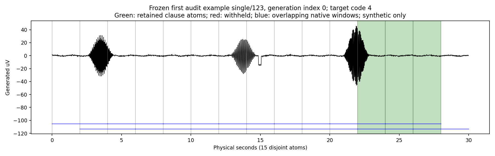
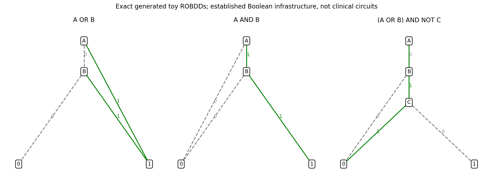
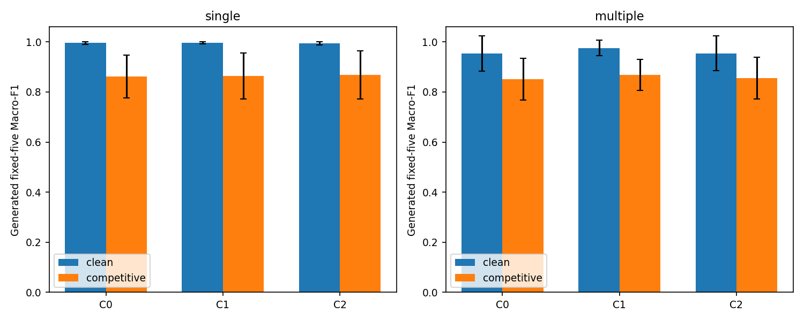
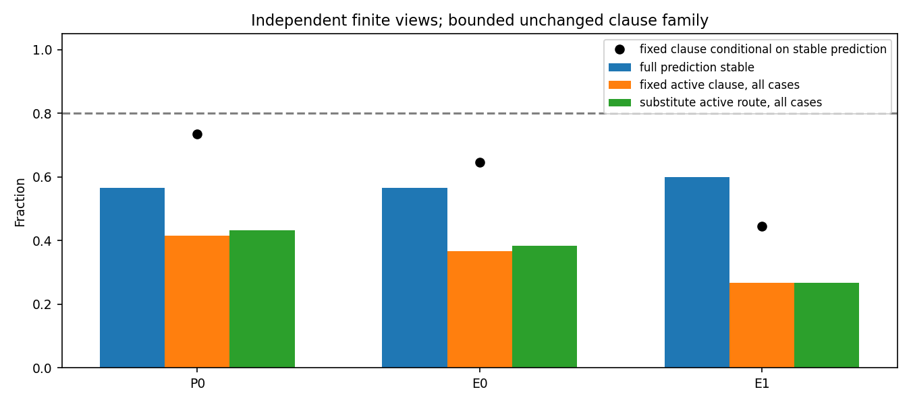
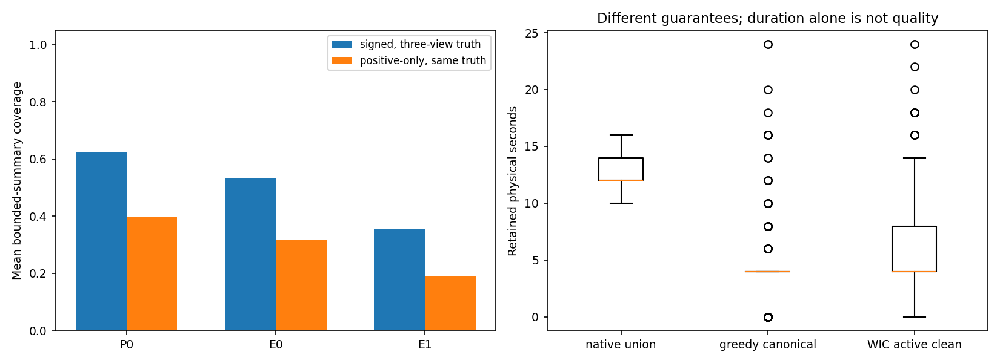
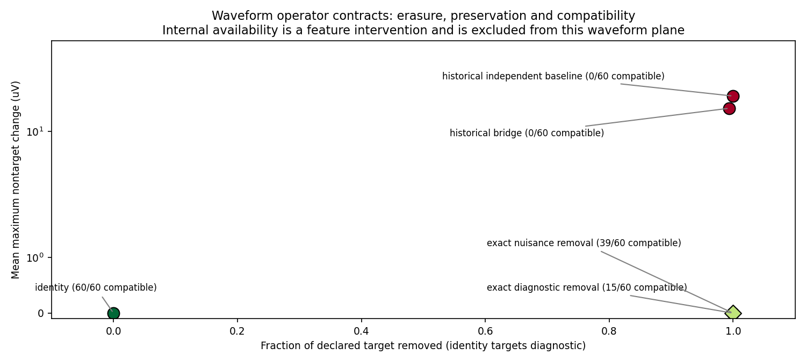

Exact finite-model circuits; synthetic only. No clinical validity or real EEG access.
Clean additive utility: FAIL. C2 complete robustness: FAIL. Incremental query consistency: FAIL. Independent-view fixed-witness stability: FAIL.
| Predictor | Correct/wrong audit | Compact correct | Signed coverage | Stable class | Fixed/substitute all cases |
|---|---|---|---|---|---|
| P0 | 60/0 | 59/60 | 0.626 | 0.567 | 0.417/0.433 |
| E0 | 59/1 | 46/59 | 0.533 | 0.567 | 0.367/0.383 |
| E1 | 55/5 | 34/55 | 0.357 | 0.600 | 0.267/0.267 |
42 neural fits; 9000 updates; 339.225s scientific CPU wall. CUDA: BLOCKED.
All task/seed scores, calibration, operator and integrity records (JSON) · WP01–WP16 ledger






Next: review operator-specific explanation usefulness, preserve negative training results, and separately authorize any narrowly scoped source pilot. No automatic Phase X.
Final CPU regression: 880 passed, 11 CUDA skips, 0 failures, 0 errors. Exact final commit and CI links are recorded in the draft PR.